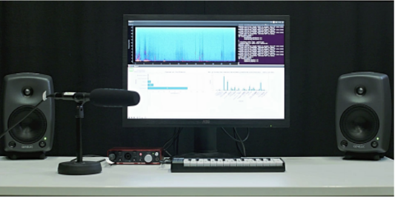
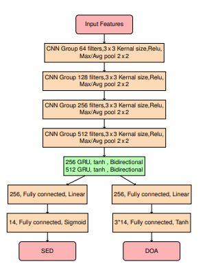
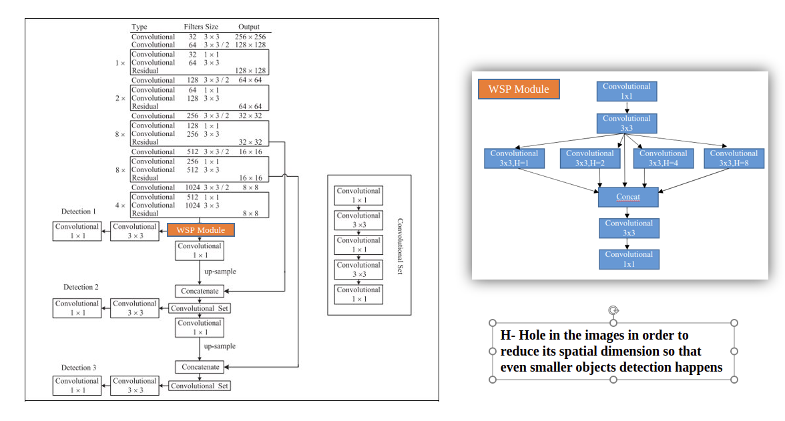
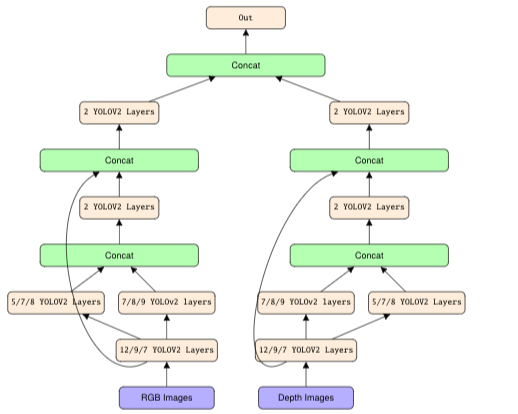

Acoustic scene classification
A Real-Time Demo for Acoustic Event Classification in Ambient Assisted Living Contexts
Python
Automated Audio Captioning
The human like perception of audio events not only perform detection and localization, but also tries to summarize the relationship between different audio events.
Python, Keras

SOUND EVENT DETECTION AND LOCALIZATION USING CRNN MODELS
The method utilizes logmel features for sound event detection, and uses intensity vector and generalized cross-correlation (GCC) GCC-PHAT features for sound source localization.
Toad Data Modeler, MySQL

Bicycle Detection and Counting
Created New Models using Yolo namely Wider Spatial Pyramids and Spatial Pyramids using YOLOv3 and pruned the network to work in a CPU
Python Pytorch

Person Detection by fusing Depth and RGB Features
Fusion of Architectures at different layers to improve the result
Python, pytorch, SFP YOLOV2